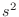

Next: SAXSData.saxs_read() Read Up: The SAXSData class: using Previous: SAXSData() create Contents Index
Routine to initialize the SAXSData structure. Here the sampling in reciprocal space needs to be specified; currently only equidistant sampling is possible. Moreover, the parameters for the scoring function and for its computation are set.
s_min and s_max specify the minimum and maximum frequency in reciprocal space, in Å. maxs gives the maximum number of frequencies, and nmesh the actual number (which must be less than maxs).
natomtyp gives the number of “atoms”, i.e. scattering centers. represtyp specifies the representation : 'heav', 'allh', or 'CA'. filename is the name of the library for formfactors. wswitch is the character for filter of scoring function: 'unity', 'sq', or 'hybrid'. If 'hybrid', then s_hybrid is the frequency above which  weighting is applied. s_low and s_hi give the lower and upper cutoff for the bandpass filter in Å. spaceflag specifies how should be computed. 'real' space viaor 'reciprocal'. 'real' is more than a magnitude faster but less accurate for high resolution ().
rho_solv gives the electron density of solvent, in Å. (The default 0.334 corresponds to HO.) use_lookup, if True, uses lookup tables for SINC and COS functions, giving a significant increase in speed for 'reciprocal' mode.
nr gives the number of points for
If use_offset is True then allowance is made for an additive constant in the experimental spectrum. If use_rolloff is True, allowance is made for Gaussian rolloff in the model spectrum. If use_conv is True, the spectrum is multiplied with the formfactor of nitrogen ( 3Å) spectrum. If mixflag is True then more than one conformation is modeled simultaneously. If pr_smooth is True smoothing of p(r) is done.